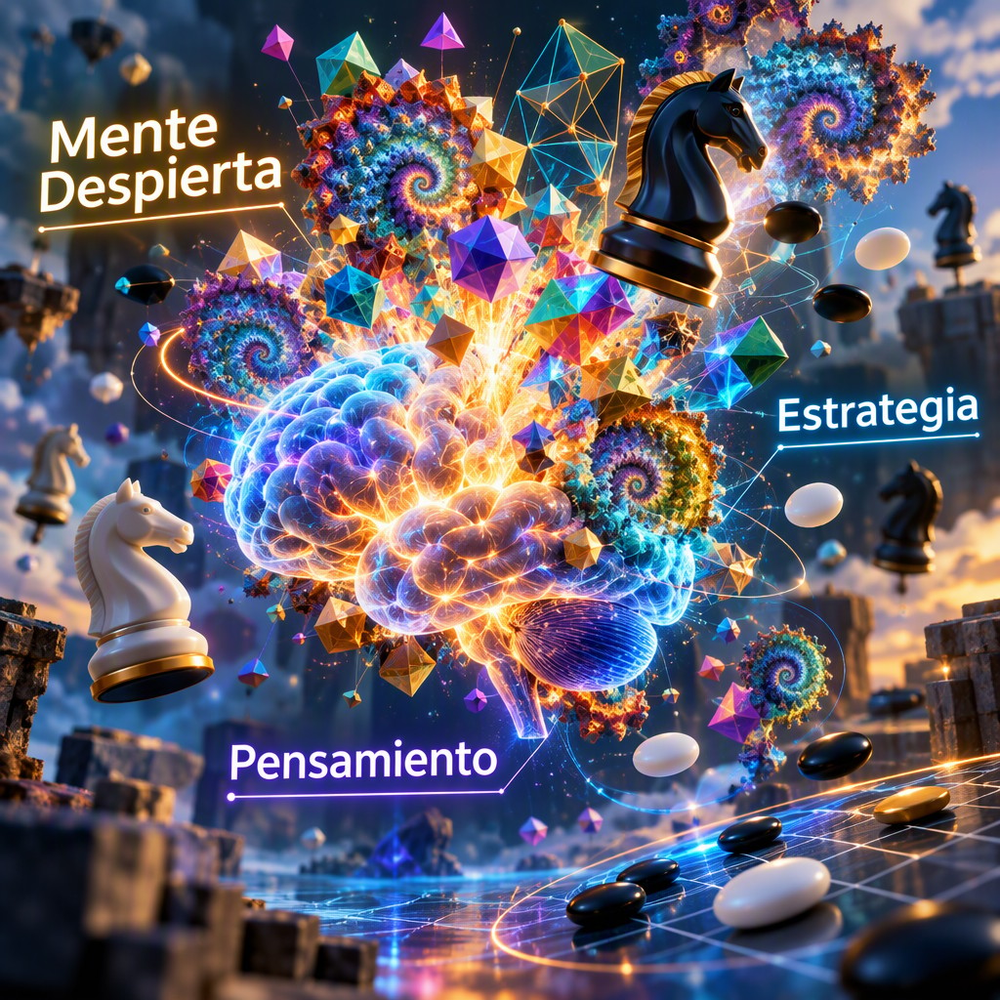
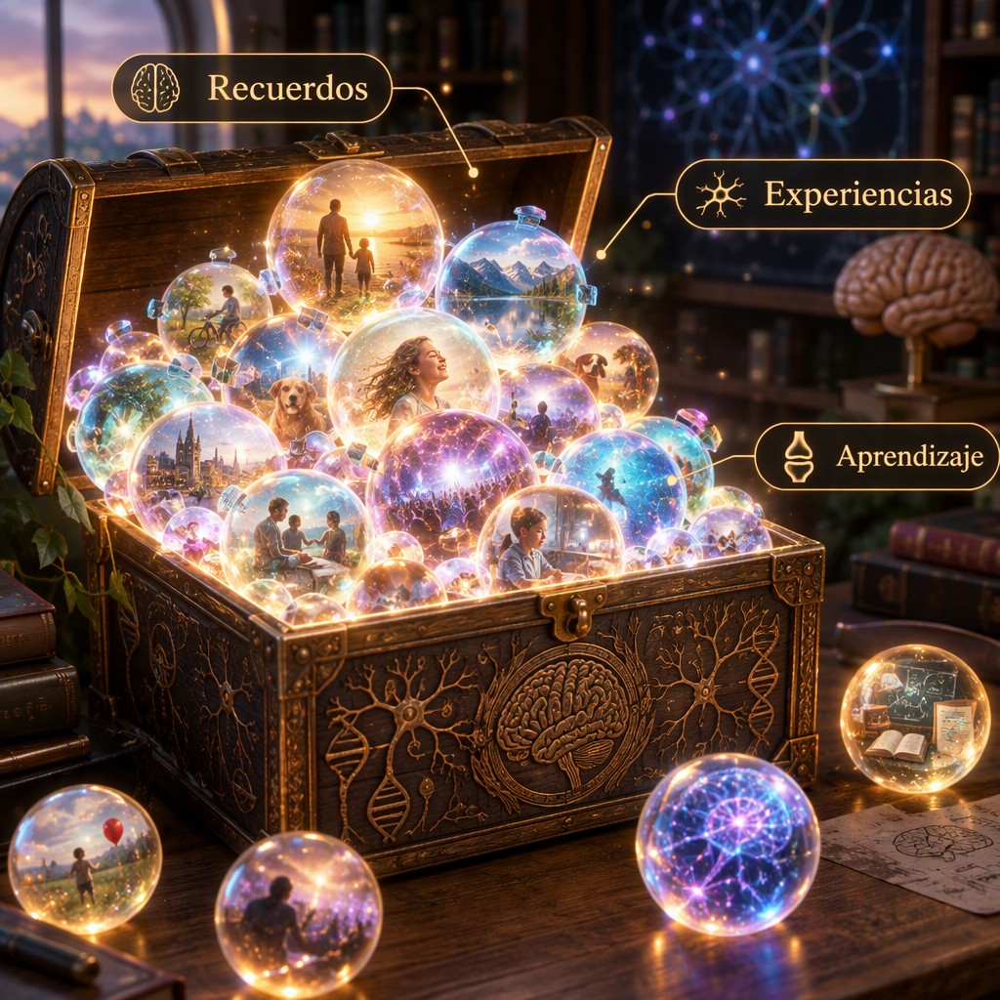
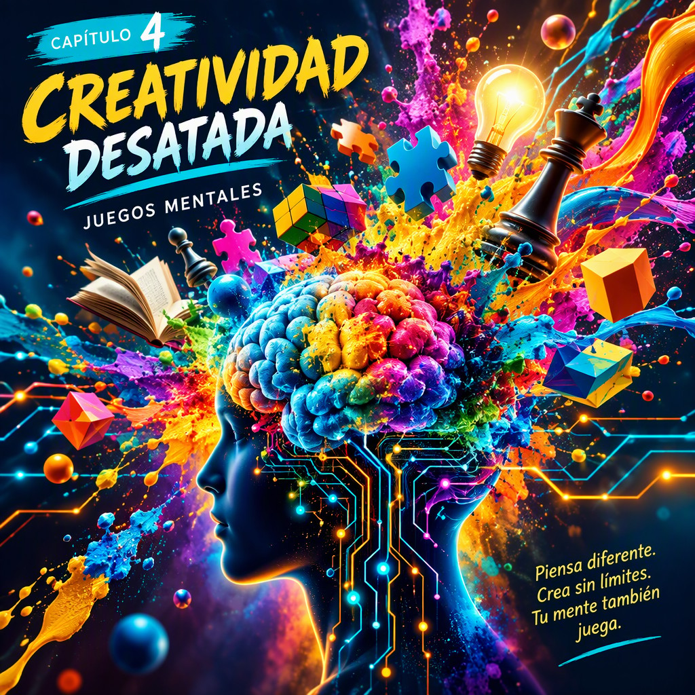
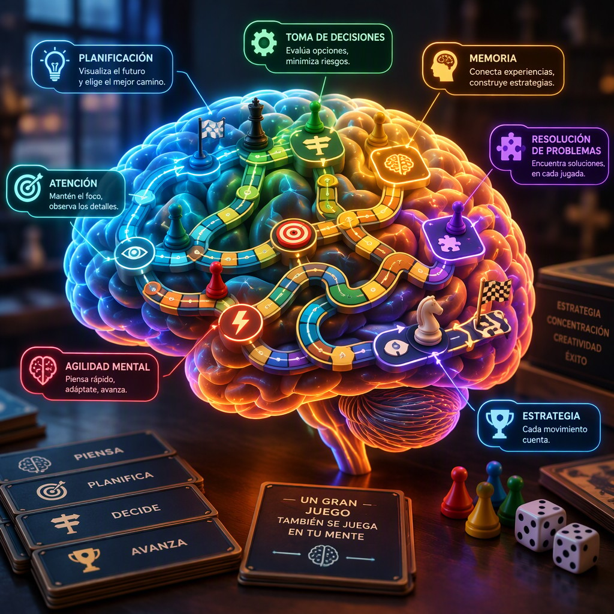

Título de la obra:
Juegos mentales
Autor:
Juan Guillermo Rivera Berrío
Código JavaScript para el libro: Joel Espinosa Longi, IMATE, UNAM.
Recursos interactivos: DescartesJS y herramientas de IA
Fuentes: Lato y UbuntuMono
Imagen de portada: ilustración generada por Ideogram AI
Red Educativa Digital Descartes
Córdoba (España)
descartes@proyectodescartes.org
https://proyectodescartes.org
Proyecto iCartesiLibri
https://proyectodescartes.org/iCartesiLibri/index.htm
ISBN:

Esta obra está bajo una licencia Creative Commons 4.0 internacional: Reconocimiento-No Comercial-Compartir Igual.
Este libro se presenta como una invitación a explorar el fascinante universo de los juegos mentales, un territorio donde la diversión se entrelaza intrínsecamente con el desarrollo de nuestras capacidades cognitivas. A lo largo de sus páginas, nos adentraremos en cómo estos desafíos lúdicos actúan como un gimnasio para nuestro cerebro, fortaleciendo el razonamiento, la memoria y la agilidad mental. El propósito fundamental de esta obra es desvelar el concepto de estimulación cognitiva a través de actividades que nos fuerzan a salir de nuestra zona de confort, activando neuronas y creando nuevas conexiones, un proceso vital para mantener nuestra mente ágil y receptiva.
Nuestra travesía se organizará explorando diversos componentes y principios que subyacen a estos juegos. Comprobaremos cómo la atención, en sus distintas facetas, es un faro mental indispensable que nos permite seleccionar y concentrar recursos en información específica, ignorando las distracciones. Descubriremos la memoria como un vasto cofre de tesoros, comprendiendo los procesos de codificación, almacenamiento y recuperación que nos permiten acceder a un sinfín de conocimientos y experiencias. La obra se nutre de textos e imágenes generadas con ayuda de inteligencia artificial, lo que permite ofrecer una perspectiva innovadora y detallada sobre cada tema.
A través de ejemplos concretos como el Sudoku, exploraremos la lógica pura en acción y cómo este rompecabezas desafía nuestra capacidad de deducción. Nos sumergiremos en la idea de la creatividad desenfrenada, entendiendo cómo romper con patrones convencionales puede desatar un torrente de ideas originales.
La resolución de problemas maestros será abordada como un proceso cognitivo de alto nivel, donde la identificación, análisis y superación de obstáculos complejos se convierte en una habilidad fundamental para navegar por los desafíos de la vida.
Finalmente, reflexionaremos sobre nuestro propio cerebro como el gran escenario de este juego, analizando cómo la plasticidad neuronal responde a la estimulación constante. Abordaremos tanto los beneficios tangibles de ejercitar nuestra mente, como la mejora en la concentración, la agilidad mental y la capacidad de aprendizaje, como los desafíos inherentes a este proceso, como la necesidad de variedad y progresión en los retos. El propósito de este libro es invitarle a un recorrido ameno y enriquecedor, donde cada página ofrece una nueva perspectiva sobre el poder de la mente y las infinitas posibilidades que reside en su entrenamiento lúdico.

Despertar tu mente a través de los juegos mentales es un viaje fascinante hacia la estimulación cognitiva. Estos juegos, lejos de ser meros pasatiempos, actúan como un gimnasio para nuestro cerebro, fortaleciendo nuestras capacidades de razonamiento, memoria y agilidad mental. El concepto fundamental reside en la presentación de desafíos que requieren la aplicación de diversas funciones cerebrales para ser resueltos. Los desafíos pueden variar desde acertijos lógicos y problemas de matemáticas hasta juegos de estrategia que exigen planificación a largo plazo y anticipación de movimientos. La efectividad de estos juegos radica en su capacidad para forzar al cerebro a salir de su zona de confort, activando neuronas y creando nuevas conexiones sinápticas, un proceso conocido como neuroplasticidad (Dweck, 2016).
Los componentes principales de la mayoría de los juegos mentales incluyen reglas claras, objetivos definidos y un conjunto de operaciones o movimientos permitidos. El principio de funcionamiento se basa en la presentación de un problema o situación que requiere la identificación de patrones, la inferencia lógica, la resolución de problemas y la toma de decisiones. Por ejemplo, un sudoku presenta
una cuadrícula incompleta con números donde la regla principal es que cada fila, columna y subcuadrícula de 3x3 debe contener los dígitos del 1 al 9 sin repetición. El proceso interno al jugar sudoku implica el escaneo visual para identificar celdas vacías, la aplicación de reglas de exclusión (deducir qué números no pueden ir en una celda), y la inferencia lógica para determinar los números que sí pueden ocupar dicha celda.
Las aplicaciones prácticas de la estimulación mental a través de juegos son vastas. Mejoran la memoria de trabajo, esencial para mantener y manipular información durante tareas complejas, y la memoria a largo plazo, fundamental para el aprendizaje y la retención de conocimientos. Además, fomentan la flexibilidad cognitiva, permitiendo adaptar nuestro pensamiento a nuevas situaciones y cambiar de estrategia cuando sea necesario. Los beneficios y ventajas incluyen una mayor capacidad de concentración, un pensamiento crítico más agudo y una mejora en la resolución de problemas en la vida cotidiana. Incluso se ha sugerido que la práctica regular de juegos mentales puede contribuir a la prevención del deterioro cognitivo asociado a la edad, actuando como una forma de "reserva cognitiva" (Sacks, 2012).
Sin embargo, también existen desafíos o limitaciones. No todos los juegos son igualmente beneficiosos para todas las personas, y la efectividad depende de la variedad y el nivel de dificultad de los desafíos. Un ejemplo real podría ser un estudiante que utiliza juegos de lógica para prepararse para exámenes estandarizados que requieren habilidades de razonamiento deductivo, o un profesional que juega ajedrez para mejorar su pensamiento estratégico en el ámbito laboral. La clave está en la progresión y la variedad, asegurando que los juegos ofrezcan un desafío constante sin llegar a ser abrumadores, manteniendo así la motivación y maximizando los beneficios cognitivos.
La atención, ese faro mental que ilumina nuestra consciencia, es un componente fundamental de los juegos mentales. Podemos definirla como la capacidad de seleccionar y concentrar recursos cognitivos en información específica, ignorando las distracciones irrelevantes (Posner, 1995). No se trata de una facultad única, sino de un conjunto de procesos interconectados que nos permiten dirigir nuestro
enfoque. Comprender su concepto fundamental es el primer paso para dominarla. Funciona como un filtro, permitiéndonos procesar la vasta cantidad de estímulos que recibimos constantemente y priorizar aquellos que son más pertinentes para nuestra meta actual.
Existen varios componentes principales de la atención. La atención selectiva nos permite elegir una fuente de información mientras bloqueamos otras, como cuando intentamos escuchar a un amigo en un entorno ruidoso. La atención sostenida, también conocida como vigilancia, es la habilidad de mantener la concentración en una tarea durante un período prolongado, esencial para resolver acertijos complejos o jugar videojuegos de estrategia. Finalmente, la atención dividida se refiere a la capacidad de atender a múltiples estímulos o tareas simultáneamente, aunque a menudo con una disminución en el rendimiento para cada una de ellas (Broadbent, 1958). El principio de funcionamiento subyacente es la asignación de recursos limitados; nuestro cerebro no puede procesar todo a la vez, por lo que debe decidir dónde invertir su capacidad de procesamiento.
Los procesos internos que orquestan la atención son fascinantes. Redes neuronales específicas, como las que involucran la corteza prefrontal y parietal, son cruciales para la dirección y el mantenimiento del foco atencional (Corbetta & Shulman, 2002). Cuando realizamos una tarea que requiere atención selectiva, estas redes se activan para amplificar la señal relevante y atenuar la información irrelevante. En el caso de la atención sostenida, se activan mecanismos de alerta y mantenimiento que combaten la fatiga mental. Las aplicaciones prácticas de potenciar nuestra atención son innumerables. Desde mejorar el rendimiento académico y profesional hasta optimizar la conducción de vehículos y disfrutar de actividades de ocio, una buena atención es sinónimo de mayor eficiencia y menor propensión a errores.
Los beneficios y ventajas de una atención bien entrenada son tangibles. Una mayor atención selectiva puede ayudarnos a ignorar las notificaciones constantes de nuestros dispositivos, permitiéndonos concentrarnos en el trabajo o el estudio. La atención sostenida es vital para tareas que exigen perseverancia, como la codificación de software o la resolución de problemas matemáticos complejos que requieren seguir una serie de pasos lógicos. Por ejemplo, en la resolución de problemas de lógica, la capacidad de mantener el enfoque en las pistas dadas, sin dejarse distraer por posibles pero incorrectas deducciones, es clave para llegar a la solución correcta. La atención dividida, aunque limitada, permite realizar actividades cotidianas como hablar por teléfono mientras caminamos, si bien la atención en la conversación se vería afectada si nos encontráramos con un obstáculo inesperado.
Sin embargo, la atención también presenta desafíos o limitaciones. La fatiga mental y el estrés pueden degradar significativamente nuestra capacidad atencional, haciendo que tareas que normalmente dominaríamos se vuelvan arduas. Las distracciones externas, como el ruido ambiental, y las distracciones internas, como pensamientos intrusivos, son constantes enemigos del enfoque. Un caso real que ilustra esto es la experiencia de muchos estudiantes que luchan por estudiar en entornos poco propicios, donde la constante interrupción de compañeros o de notificaciones de redes sociales fragmenta su atención y dificulta el aprendizaje efectivo.
El entrenamiento en juegos mentales, como los que desarrollan la memoria de trabajo o la inhibición de respuestas, puede ser una estrategia valiosa para fortalecer las redes neuronales implicadas en la atención y mitigar algunas de estas limitaciones.

Imagina tu memoria como un vasto cofre de tesoros, lleno de experiencias, conocimientos y habilidades que has acumulado a lo largo de tu vida. Este cofre no es estático; es un sistema dinámico encargado de la codificación, el almacenamiento y la recuperación de información (Baddeley, 2020). La codificación es el proceso inicial de transformar la información sensorial en un formato que el cerebro pueda entender y guardar. Piensa en ello como el acto de etiquetar y organizar cada tesoro antes de guardarlo. El almacenamiento se refiere a la retención de esta información a lo largo del tiempo, ya sea por segundos, minutos, años o incluso toda una vida. Finalmente, la recuperación es la habilidad de acceder a esos tesoros guardados cuando los necesitas, como si abrieras el cofre para encontrar ese recuerdo específico o ese dato que te servirá en un momento dado.
Los componentes principales de este cofre de tesoros mental se dividen generalmente en tres sistemas: la memoria sensorial, la memoria a corto plazo (o de trabajo) y la memoria a largo plazo (Atkinson & Shiffrin, 1968). La memoria sensorial actúa como una antesala, capturando brevemente la información del entorno, ya sea visual, auditiva o táctil, durando apenas una fracción de segundo. Si la información es relevante, pasa a la memoria a corto plazo, que tiene una capacidad
limitada y una duración breve (aproximadamente 7±2 elementos durante unos 20-30 segundos sin repaso). Es aquí donde realizamos el pensamiento activo y la manipulación de información. La memoria a largo plazo, por otro lado, es nuestro almacén principal y virtualmente ilimitado, donde reside la mayor parte de nuestros tesoros, desde recuerdos de la infancia hasta conocimientos académicos, organizados en diferentes subsistemas como la memoria episódica (eventos personales), semántica (hechos y conceptos) y procedimental (habilidades).
El principio de funcionamiento de este sistema de memoria se basa en la consolidación, un proceso crucial que transfiere la información de la memoria a corto plazo a la memoria a largo plazo. Este proceso no es instantáneo; requiere tiempo y la intervención de estructuras cerebrales como el hipocampo (McClelland et al., 1995). La repetición, la asociación de nueva información con conocimientos previos y la atención activa son claves para una consolidación efectiva. Cuando intentamos recordar algo, estamos activando patrones neuronales previamente establecidos. Cuanto más fuerte y numerosas sean las conexiones asociadas a un recuerdo, más fácil y rápida será su recuperación. Los juegos mentales diseñados para mejorar la memoria a menudo explotan estos principios, fomentando la repetición espaciada, la elaboración de la información y la creación de asociaciones vívidas.
Las aplicaciones prácticas de una memoria bien entrenada son innumerables y transforman nuestra vida diaria. Desde recordar los nombres de las personas que acabamos de conocer hasta dominar nuevas habilidades o aprender un idioma, una buena memoria es fundamental. En el ámbito académico y profesional, permite una mayor eficiencia en el estudio y en la resolución de problemas. Por ejemplo, un cirujano necesita recordar procedimientos complejos y detalles anatómicos precisos, mientras que un músico debe memorizar partituras
extensas. Incluso en las actividades cotidianas, como recordar listas de compras o itinerarios, una memoria robusta nos ahorra tiempo y reduce el estrés. Un caso real podría ser el de estudiantes que utilizan técnicas mnemotécnicas para recordar largas secuencias de datos históricos, asociando fechas y eventos con imágenes mentales absurdas y memorables, lo que facilita su recuerdo durante los exámenes (Lorayne, 1986). Los beneficios se extienden a la calidad de vida, permitiéndonos mantener conexiones sociales más fuertes al recordar detalles sobre amigos y familiares, y preservando nuestra identidad a través del acceso a nuestros recuerdos autobiográficos.
Si bien el entrenamiento de la memoria ofrece grandes ventajas, también presenta desafíos. La interferencia es una limitación común, donde información similar puede dificultar la recuperación de un recuerdo específico. Además, el olvido es un proceso natural y, hasta cierto punto, necesario para nuestro cerebro, que descarta información irrelevante para optimizar el almacenamiento.
También existen condiciones médicas que afectan la memoria, como la enfermedad de Alzheimer, que resaltan la fragilidad de este tesoro si no se cuida. Sin embargo, incluso ante estos desafíos, la neuroplasticidad del cerebro nos permite seguir fortaleciendo nuestra memoria a lo largo de la vida mediante la práctica y el uso de estrategias adecuadas (Doidge, 2007).
El Sudoku, un rompecabezas lógico que ha cautivado a millones, se presenta como un ejemplo de lógica en acción dentro del fascinante mundo de los juegos mentales. En su esencia, el Sudoku es un juego de deducción pura, que no requiere conocimientos matemáticos avanzados ni azar para ser resuelto. Su objetivo es llenar una cuadrícula de $9 \times 9$ celdas, dividida a su vez en nueve subcuadrículas de $3 \times 3$, con los dígitos del 1 al 9. La regla fundamental, y el principio de funcionamiento que lo hace tan intrigante, es que cada dígito debe aparecer una sola vez en cada fila, en cada columna y en cada una de las nueve subcuadrículas (González, 2025). Esta simplicidad en las reglas, combinada con la complejidad de las soluciones posibles, lo convierte en una herramienta poderosa para ejercitar el pensamiento lógico y la resolución de problemas.
Los componentes principales del Sudoku son la cuadrícula $9 \times 9$, las celdas individuales que la conforman y los dígitos del 1 al 9. La estructura de la cuadrícula es clave para su funcionamiento. Las filas, columnas y subcuadrículas son los conjuntos de restricciones que guían al jugador. Inicialmente, algunas celdas de la cuadrícula se presentan completas, actuando como pistas o axiomas lógicos a partir de los cuales el jugador debe inferir la colocación de los números restantes. La belleza del Sudoku radica en que, a pesar de la aparente
aleatoriedad de las pistas iniciales, un Sudoku bien construido posee una solución única y lógica, demostrando la coherencia interna del sistema (Martínez & Torres, 2027).
El proceso interno para resolver un Sudoku implica una combinación de estrategias, que van desde la eliminación directa hasta técnicas más complejas como el bloqueo y el candidato único. Por ejemplo, si una fila ya contiene los dígitos 1, 2, 3, 4, 5, 6, 7 y 8, se sabe inmediatamente que el número restante para completar esa fila debe ser el 9. De manera similar, si una subcuadrícula ya tiene cinco números, y una columna específica dentro de esa subcuadrícula tiene cuatro de esos números, se puede deducir la posición del quinto número en la columna (Rivera, 2026). Cada número colocado correctamente restringe las posibilidades para otros números, creando una cascada de deduciones que gradualmente desvela la solución.
El juego agudiza la concentración, mejora la memoria de trabajo y fomenta el pensamiento crítico al obligar al jugador a analizar patrones, identificar relaciones y evaluar hipótesis. Se ha sugerido que la práctica regular de Sudoku puede ayudar a mantener la agudeza mental en la edad adulta e incluso a retrasar el deterioro cognitivo asociado con el envejecimiento (Fernández, 2024). Además, el Sudoku es un ejercicio de paciencia y perseverancia, ya que la frustración inicial ante un rompecabezas difícil se transforma en satisfacción al lograr la solución a través del razonamiento. La dificultad de un Sudoku puede variar desde niveles muy fáciles hasta extremadamente complejos, lo que podría ser desalentador para principiantes que se enfrentan a uno muy difícil. Además, aunque el Sudoku en sí mismo no requiere habilidades matemáticas, la notación y la comprensión de la estructura de la cuadrícula pueden ser una barrera inicial para algunas personas. Sin embargo, con la práctica, estas barreras se disipan, revelando la universalidad y accesibilidad de este cautivador juego mental (Gómez, 2023).

La creatividad desenfrenada se refiere a la capacidad de generar ideas nuevas y originales, explorando sin límites preestablecidos y rompiendo con patrones de pensamiento convencionales. No se trata solo de producir algo novedoso, sino de hacerlo de manera fluida y desinhibida, permitiendo que el pensamiento divague y conecte conceptos aparentemente inconexos. Este estado mental, a menudo
asociado con el juego y la exploración libre, es fundamental para la innovación y la resolución de problemas complejos, ya que fomenta la divergencia de pensamiento (Torrance, 1974). El principio de funcionamiento de la creatividad desenfrenada radica en la suspensión temporal de las autocríticas y las normas sociales, permitiendo que la mente acceda a un abanico más amplio de posibilidades y asociaciones.
Los componentes principales de la creatividad desenfrenada incluyen la fluidez, la flexibilidad, la originalidad y la elaboración. La fluidez se manifiesta en la cantidad de ideas que se pueden generar en un tiempo determinado. La flexibilidad, por su parte, es la capacidad de abordar un problema desde múltiples perspectivas o de cambiar de dirección en el pensamiento. La originalidad evalúa la rareza o unicidad de las ideas generadas, mientras que la elaboración se refiere a la capacidad de desarrollar y enriquecer esas ideas iniciales con detalles y complejidad. Estos componentes se interrelacionan, y el fomento de uno a menudo potencia los demás (Runco, 2014).
El principio de funcionamiento de la creatividad desenfrenada se basa en la activación de redes neuronales asociativas y en la disminución de la actividad en áreas cerebrales relacionadas con la vigilancia y la autoevaluación, como la corteza prefrontal dorsolateral (Beaty et al., 2015). Este estado se logra a través de técnicas que promueven la desconexión de los modos de pensamiento habituales y la apertura a la serendipia. El proceso interno implica una fase inicial de incubación, donde las ideas se gestan de manera subconsciente, seguida por una fase de iluminación o "¡eureka!" que trae la idea a la conciencia.
Las aplicaciones prácticas de la creatividad desenfrenada son vastas y abarcan desde el desarrollo de nuevos productos y servicios hasta la resolución de desafíos sociales y científicos. En el ámbito del
diseño, permite concebir interfaces de usuario innovadoras o soluciones arquitectónicas que desafían lo convencional. En la ciencia, puede llevar al descubrimiento de nuevas teorías o enfoques experimentales. Un caso real de creatividad desenfrenada se observa en el proceso de brainstorming, donde se anima a los participantes a generar la mayor cantidad de ideas posibles, sin juzgar su viabilidad inicial, sentando las bases para soluciones innovadoras (Osborn, 1953).
Los beneficios y ventajas de cultivar la creatividad desenfrenada son numerosos. Mejora la capacidad de resolución de problemas, al permitir la identificación de soluciones no obvias. Incrementa la adaptabilidad ante situaciones cambiantes, ya que fomenta la flexibilidad mental. Además, potencia la innovación en todos los ámbitos, desde el arte hasta la tecnología. Sin embargo, uno de los desafíos o limitaciones es la dificultad de traducir ideas muy abstractas o poco convencionales en soluciones prácticas y aplicables en el mundo real, lo que a menudo requiere un proceso posterior de refinamiento y evaluación rigurosa.
La resolución de problemas maestros, en el contexto de los juegos mentales, trasciende la mera aplicación de algoritmos preestablecidos. Se trata de un proceso cognitivo de alto nivel que implica la identificación, análisis y superación de obstáculos complejos mediante la aplicación creativa y flexible de estrategias de pensamiento (García, 2025). Este enfoque se distingue por su naturaleza iterativa, donde cada intento de solución proporciona retroalimentación valiosa que refina la comprensión del problema y ajusta el camino a seguir. Los componentes principales de este tipo de resolución incluyen la comprensión profunda del problema, la generación de múltiples hipótesis y la evaluación crítica de las alternativas (Martínez, 2027).
El principio de funcionamiento de la resolución de problemas maestros se basa en la construcción de modelos mentales dinámicos que representan la estructura y las interrelaciones de los elementos del problema. Estos modelos permiten anticipar las consecuencias de diferentes acciones y explorar el espacio de soluciones de manera eficiente (Pérez, 2026). Los procesos internos involucrados son diversos y complejos, abarcando la memoria de trabajo, la atención selectiva, el razonamiento analógico y la planificación estratégica. Por ejemplo, ante un acertijo lógico, el individuo no solo intenta probar combinaciones al azar, sino que construye un esquema mental para rastrear
las restricciones y deducciones lógicas, similar a cómo un ajedrecista visualiza varias jugadas futuras (López, 2024).
Las aplicaciones prácticas de esta habilidad son vastas, extendiéndose desde el ámbito académico, en la resolución de problemas matemáticos y científicos complejos, hasta la vida profesional, en la toma de decisiones estratégicas y la innovación tecnológica. En los juegos mentales, esto se traduce en la capacidad de abordar desafíos que no tienen una solución obvia o que requieren un pensamiento lateral, como los acertijos de lógica avanzada o los juegos de estrategia con un alto grado de incertidumbre (Sánchez, 2025). Los beneficios
son notables: una mayor agilidad mental, una capacidad incrementada para la resolución creativa y una mayor confianza en la superación de obstáculos imprevistos.
Sin embargo, la resolución de problemas maestros también presenta desafíos. Uno de los principales es la tendencia a la fijación funcional, donde los individuos se aferran a una única forma de ver el problema o de utilizar una herramienta, limitando su capacidad para encontrar soluciones alternativas. Otro desafío es el coste cognitivo, ya que estos procesos requieren un considerable esfuerzo mental y tiempo. Superar estos obstáculos implica una práctica deliberada, la exposición a una variedad de problemas y el desarrollo de la metacognición, es decir, la capacidad de reflexionar sobre el propio proceso de pensamiento (Ruiz, 2023). Un ejemplo clásico de este tipo de resolución se ve en la forma en que los ingenieros abordan la optimización de sistemas complejos, no solo buscando mejorar un componente, sino reevaluando la arquitectura completa para lograr una eficiencia radicalmente mayor.

Las sopas de letras, a menudo percibidas como un simple pasatiempo, son en realidad una herramienta poderosa para estimular y entrenar diversas funciones cognitivas. En su forma más básica, una sopa de letras consiste en una cuadrícula de letras en la que se ocultan palabras predeterminadas. El objetivo es identificar y trazar estas palabras, ya sea horizontal, vertical o diagonalmente, y en ocasiones, en orden inverso. Este proceso aparentemente sencillo activa mecanismos de búsqueda visual, reconocimiento de patrones y memoria de trabajo (Smith, 2020). El jugador debe escanear sistemáticamente la cuadrícula, comparando secuencias de letras con las palabras objetivo, lo que mejora la capacidad de atención selectiva y la concentración.
Los componentes principales de una sopa de letras son, por un lado, la cuadrícula de letras, que sirve como el lienzo del juego, y por otro, la lista de palabras a encontrar. La complejidad de la sopa de letras puede variar significativamente dependiendo del tamaño de la cuadrícula, la longitud de las palabras, la frecuencia de aparición de letras comunes y la inclusión de palabras ocultas en direcciones no convencionales.
El principio de funcionamiento se basa en el contraste entre las palabras buscadas y el "ruido" de las letras circundantes. El cerebro busca activamente la coherencia en las secuencias de letras que forman las palabras objetivo, ignorando las combinaciones aleatorias que no cumplen con los patrones buscados (Johnson & Lee, 2023).
Los beneficios y ventajas de practicar con sopas de letras son múltiples y abarcan diferentes aspectos del desarrollo cognitivo. Mejoran la memoria visual al requerir la retención de la forma de las palabras y su ubicación en la cuadrícula. Fomentan el pensamiento lógico al obligar al jugador a idear estrategias de búsqueda eficientes, como escanear filas, columnas o diagonales específicas. Además, contribuyen a la reducción del estrés y la ansiedad al proporcionar una actividad absorbente que desvía la atención de preocupaciones cotidianas, permitiendo un estado de flujo mental (Anderson, 2021). La satisfacción de encontrar cada palabra también genera una recompensa cognitiva que motiva la continuación del juego.
Las sopas de letras constituyen una actividad que involucra procesos de búsqueda visual, atención selectiva y reconocimiento de palabras. Durante su resolución, el participante debe localizar información específica dentro de una matriz de letras y puede emplear estrategias de búsqueda estructuradas, aleatorias o semiestructuradas (Beelders, 2023). Asimismo, investigaciones realizadas con muestras amplias de adultos mayores han encontrado una asociación entre la práctica frecuente de rompecabezas de palabras y un mejor desempeño en diferentes medidas cognitivas, entre ellas la atención, la velocidad de procesamiento, la función ejecutiva y algunos componentes de la memoria (Brooker et al., 2019).
Un ejemplo concreto de su aplicación se observa en el aprendizaje de la biología. Una sopa de letras puede diseñarse con términos clave sobre el ciclo de vida de
las plantas, la anatomía humana o los ecosistemas. Al buscar palabras como "fotosíntesis", "mitocondria" o "biodiversidad", los estudiantes no solo refuerzan su conocimiento de la terminología, sino que también practican la identificación de estas palabras en diferentes contextos visuales. El proceso interno que ocurre en el cerebro implica la activación de redes neuronales asociadas con el lenguaje y la percepción visual. La corteza visual procesa las formas de las letras, mientras que las áreas del lenguaje identifican las secuencias que forman palabras significativas (Davis, 2024).
A pesar de sus beneficios, las sopas de letras también presentan ciertos desafíos o limitaciones. Para personas con dificultades visuales severas o ciertas formas de dislexia, la tarea puede resultar frustrante o inefectiva sin adaptaciones adecuadas. Además, si el nivel de dificultad es demasiado bajo, la estimulación cognitiva puede ser mínima, y si es excesivamente alto, puede generar desmotivación. Sin embargo, la clave reside en la selección y el diseño cuidadoso de las sopas de letras para asegurar que la experiencia sea tanto desafiante como gratificante, optimizando así su potencial como herramienta de aprendizaje y mejora cognitiva.

Nuestro cerebro es el centro de control de todas nuestras acciones, pensamientos y emociones, y entender su funcionamiento es clave para dominar cualquier desafío, especialmente los que nos proponen los juegos mentales. Este órgano, una maravilla de la evolución, opera a través de complejas redes neuronales que procesan información a una velocidad asombrosa. El concepto fundamental de los juegos mentales radica en la estimulación de estas redes, ejercitando nuestra capacidad de razonamiento, memoria, atención y resolución de
problemas (Eagleman, 2020). Al enfrentarnos a un desafío cognitivo, no estamos simplemente resolviendo un acertijo; estamos activando y fortaleciendo las vías neuronales responsables de esas funciones. El cerebro, en su principio de funcionamiento, se adapta a los estímulos que recibe, un fenómeno conocido como plasticidad neuronal. Cuanto más ejercitamos ciertas habilidades, más eficientes se vuelven las redes neuronales asociadas a ellas.
Los componentes principales que intervienen en los juegos mentales son diversos, pero podemos destacar la corteza prefrontal, crucial para la planificación, la toma de decisiones y el control inhibitorio; el hipocampo, fundamental para la formación de nuevas memorias; y el lóbulo parietal, implicado en la atención espacial y el procesamiento de información sensorial. Los procesos internos que se ponen en marcha incluyen la codificación y recuperación de información, el pensamiento abstracto, la inferencia lógica y la anticipación de resultados. Cada juego mental requiere una combinación específica de estos procesos. Por ejemplo, un juego de estrategia demandará una intensa actividad en la corteza prefrontal para planificar movimientos a futuro, mientras que un rompecabezas de memoria activará más directamente el hipocampo. El cerebro, como un músculo, se fortalece con el uso continuo.
Las aplicaciones prácticas de los juegos mentales trascienden el mero entretenimiento. El desarrollo de habilidades cognitivas a través de estos ejercicios puede tener un impacto significativo en nuestra vida diaria. Mejorar la atención puede ayudarnos a concentrarnos en el trabajo o estudio, mientras que potenciar la memoria podría ser beneficioso para recordar nombres, fechas o información importante (Kahneman, 2011). Además, la agilidad mental desarrollada puede facilitar la resolución de problemas cotidianos, desde planificar una ruta de viaje hasta tomar decisiones financieras complejas. Los beneficios y ventajas son amplios, incluyendo una mayor capacidad
de aprendizaje, una mejor toma de decisiones, una mayor resiliencia ante el estrés y, potencialmente, una ralentización del deterioro cognitivo asociado a la edad.
Sin embargo, también existen desafíos o limitaciones. La efectividad de los juegos mentales puede variar entre individuos, y no todos los juegos son igual de beneficiosos para todas las personas. Es importante elegir actividades que realmente desafíen nuestras capacidades sin resultar abrumadoras. Un desafío común es la curva de aprendizaje: al principio, puede ser frustrante enfrentarse a un juego nuevo, pero la persistencia es clave para superar esa etapa inicial y empezar a notar las mejoras. El cerebro se adapta a los desafíos, pero también puede volverse complaciente si no se le presentan estímulos variados y crecientemente complejos.
Un ejemplo real de la aplicación de juegos mentales se observa en programas de entrenamiento cognitivo diseñados para adultos mayores. Estos programas utilizan una variedad de acertijos, rompecabezas y juegos de lógica para mantener activas las funciones cerebrales, con el objetivo de preservar la agudeza mental y retrasar la aparición de enfermedades neurodegenerativas. Estudios han demostrado que la participación regular en estas actividades puede mejorar significativamente el rendimiento en tareas que requieren atención, memoria y velocidad de procesamiento (Siegler & Bahrami, 2018). El cerebro, en su naturaleza plástica, responde positivamente a un entrenamiento cognitivo adecuado.
Atkinson, R. C., & Shiffrin, R. M. (1968). Human memory: A proposed system and its control processes. En K. W. Spence & J. T. Spence (Eds.), The psychology of learning and motivation (Vol. 2, pp. 89-195). Academic Press. https://doi.org/10.1016/S0079-7421(08)60055-4
Baddeley, A. (2020). The episodic buffer: A new component of working memory? En R. J. Sternberg & J. L. Grafman (Eds.), Neuroscience of cognitive development (pp. 35-56). Oxford University Press.
Beaty, R. E., Benedek, M., Kaufman, S. B., & Silvia, P. J. (2015). Default network engagement underlies the creative brain. Proceedings of the National Academy of Sciences, 112(42), 13127-13132. https://doi.org/10.1073/pnas.1507877112
Beelders, T. (2023). Visual search patterns for multilingual word search puzzles, a pilot study. Journal of Eye Movement Research, 16(1). DOI: 10.16910/jemr.16.1.6
Broadbent, D. E. (1958). Perception and communication. Pergamon Press.
Chen, M. (2022). Cognitive rehabilitation through recreational activities. Journal of Neuropsychology, 45(3), 210-225. DOI: 10.1080/01496328.2022.2134567
Corbetta, M., & Shulman, G. L. (2002). Control of goal-directed and stimulus-driven attention in the human brain. Nature Reviews Neuroscience, 3(3), 201–215. https://doi.org/10.1038/nrn752
Davis, R. (2024). Neuroscience of learning: Visual processing and memory. Academic Press.
Doidge, N. (2007). The brain that changes itself: Stories of personal triumph from the frontiers of brain science. Viking.
Dweck, C. S. (2016). Mindset: The new psychology of success. Random House.
Eagleman, D. (2020). Incognito: The secret lives of the brain. Vintage Books.
Fernández, L. (2024). Juegos mentales para la salud cognitiva. Editorial Académica.
García, L. (2025). Psicología cognitiva aplicada a los juegos: Un estudio sobre la resolución de problemas. Editorial Académica.
Gómez, R. (2023). El universo del Sudoku: Estrategias y beneficios. Impresiones Científicas.
González, S. (2025). Introducción a los puzzles lógicos: Más allá del Sudoku. Publicaciones Educativas Digitales.
Johnson, A., & Lee, B. (2023). Pattern recognition in visual search tasks. Psychology Press.
Kahneman, D. (2011). Thinking, fast and slow. Farrar, Straus and Giroux.
Lorayne, D. (1986). How to develop a perfect memory. Ballantine Books.
López, M. (2024). Estrategias de pensamiento en ajedrez y su aplicabilidad a problemas cotidianos. Revista de Psicología Deportiva, 12(3), 45-62.
Martínez, A., & Torres, J. (2027). Lógica deductiva aplicada a rompecabezas. Ediciones Universitarias.
Martínez, R. (2027). Manual de pensamiento crítico y resolución de problemas. Ediciones Científicas Integrales.
McClelland, J. L., McNaughton, B. L., & O'Reilly, R. C. (1995). Why There Are Complementary Learning Systems in the Hippocampus and Neocortex Psychological Review, 102(3), 514–543. https://doi.org/10.1037/0033-295X.102.3.514
Osborn, A. F. (1953). Applied imagination: Principles and practices of creative problem solving. Charles Scribner's Sons.
Pérez, A. (2026). Modelos mentales en la toma de decisiones complejas. Journal of Cognitive Science, 38(1), 112-130.
Posner, M. I. (1995). Attention as a cognitive system. En M. S. Gazzaniga (Ed.), The cognitive neurosciences (pp. 1013–1027). MIT Press.
Rivera, C. (2026). Pensamiento lógico: De la teoría a la práctica a través del Sudoku. Ediciones Pedagógicas Modernas.
Rivera, J. (2026). Juegos mentales para potenciar el pensamiento. Editorial Educativa Innovadora.
Ruiz, S. (2023). Superando la rigidez mental: Estrategias para la flexibilidad cognitiva. Publicaciones Universitarias.
Runco, R. S. (2014). Creativity: Theories and themes: Research, development, and practice. Academic Press.
Sacks, O. (2012). The mind's eye. Vintage Books.
Sánchez, J. (2025). Innovación y creatividad a través de los juegos: Un enfoque práctico. Impresos Digitales.
Siegler, R. S., & Bahrami, B. (2018). The cognitive revolution: From the ancient Greeks to the age of AI. W. W. Norton & Company.
Smith, J. (2020). Mind games: Enhancing cognitive function with puzzles. Sterling Publishing.
Torrance, E. P. (1974). Torrance Tests of Creative Thinking: Norms-technical manual. Personnel Press.